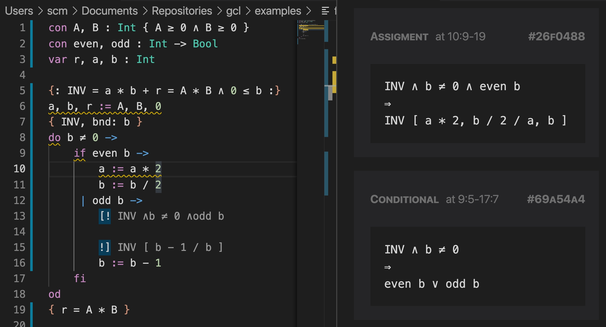

© 2021. All rights reserved.
 Site created with
Hakyll.
Site created with
Hakyll.
Modified theme
lanyon-hakyll
based on
Lanyon.
© 2021. All rights reserved.
 Site created with
Hakyll.
Site created with
Hakyll.
Modified theme
lanyon-hakyll
based on
Lanyon.
(This is a work-in-progress. A more complete, step-by-step tutorial shall be presented here.)
To install Guabao you must have Visual Code Studio. You can install Guabao by searching for the extension “Guabao” in the editor, or through the Extensions Marketplace. A one-click installation downloads the frontend as well as pre-compiled backend.
Once the extension is installed, activate Guabao by creating a new file and saving it with extension .gcl (for Guarded Command Language).
Copying and pasting the code below to the pane in the left, you should see a screen similar to this:

con A, B : Int { A ≥ 0 ∧ B ≥ 0 }
con even, odd : Int -> Bool
var r, a, b : Int
{: INV = a * b + r = A * B ∧ 0 ≤ b :}
a, b, r := A, B, 0
{ INV, bnd: b }
do b ≠ 0 ->
if even b -> a := a * 2
b := b / 2
| odd b -> ?
b := b - 1
fi
od
{ r = A * B }INV) to expand it.ctrl-c-r: when the cursor is in a hole, pressing ctrl-c-r fills in the hole.? generates a new hole.\ to input UTF-8 characters used in this language.For more information about the programming language, see Language Overview